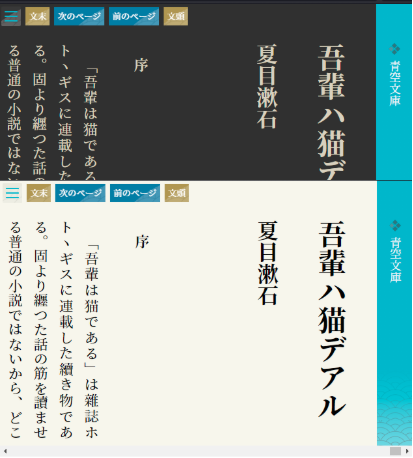

TxtMiru on the Web 1.0.19.0
- はじめに
- TxtMiru on the Webは、ブラウザ上でネット小説「小説家になろう」、「カクヨム」、「青空文庫」を縦組み表示にして読むことができます。
- リンク（縦書き対応サイト）
- 特徴
-
-
お使いのブラウザがそのまま小説ビューアに！
アプリのインストールは不要です。 -
お気に入り
気に入った小説のリストを作成することができます。
お気に入りに登録することで、現在閲覧中のページの管理と小説の更新状況を一括で取得することができるようになります。
※お気に入りは、お使いのブラウザに保存されます。
-
小説の更新状況を一括で取得
お気に入りにある小説の最新話数をまとめて取得することができます。
-
お使いのブラウザがそのまま小説ビューアに！
- 操作方法
-
Web小説の表示

- 「≡」ボタンを押下
- 「URL」ボタンを押下
- URLを入力して、「開く」ボタンを押下
ローカルファイルの表示（ダウンロードしたファイル）
- 「≡」ボタンを押下
- 「ファイルを開く」ボタンを押下
- テキストファイルの場合、
青空文庫形式、または、小説家になろう形式の何れかを選択
ファイルを選択して、「開く」ボタンを押下
※PC版は、フォルダ単位で読み込みを行うと挿絵を表示することができます
フォルダを開く際、アップロードの確認が表示されますがデータは外部に送信されません
- 「≡」ボタンを押下
- 機能紹介
-
ショートカット(PC用)
キー 機能 Fキー お気に入り Lキー URL Oキー ファイルを開く Cキー 設定 Ctrl + 左矢印 次のエピソード Ctrl + 右矢印 前のエピソード お気に入り- よく見るサイトをお気に入りとして登録できます。 「最新の情報に更新」機能を使用すると小説の総ページ数が最新の物に更新されます。
設定
機能 説明 テーマ 「ライト」と「ダーク」の２つのテーマから画面表示を選択できます。
フォントサイズ 「大(+)」「大」「中」「小」何れかのサイズの指定ができます。 メニューの位置 「上」「下」でメニューの位置を設定できます。
スマホで操作する際には「下」がお勧めです。次話、前話ボタン 「表示」、「非表示」の切替ができます。 目次ボタン 「表示」、「非表示」の切替ができます。 画面端タップでスクロール(0-100を指定:0で無効,50で画面半分の左側タップで次のページへ) 画面の左何%をタップ(クリック)で次のページへスクロールさせるか指定します。0の時、無効 WebサーバーのURL （オプション）自分でサーバーを設定した場合にはこちらで変更ができます。 WebSocketサーバーのURL （オプション）ローカルサーバーでファイル編集時に即時反映させるためのURLを指定します ユーザーID （オプション）上記、「Webサーバー」を設定した場合にサーバーでお気に入りの保存する際に指定します。 年齢認証（あなたは18歳以上ですか？） （オプション）ノクターンノベルズなどの年齢制限のあるサイトを閲覧する際に必要です。 スクロール位置を履歴に保存するまでの待機時間:ミリ秒 (1/1000 秒) 前回、表示ページの保存のために一定時間で保存される処理の間隔を指定します(処理が遅く感じるときには値を大きくしてください) スクロール時のアニメーションエフェクトを追加する ページスクロール時のアニメーションの制御を行います。 - ソースコード
-
GitHub : https://github.com/gearsns/TxtMiruOnTheWeb
更新履歴
@GearsNs